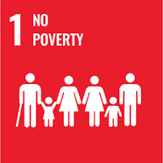
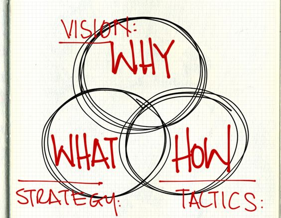
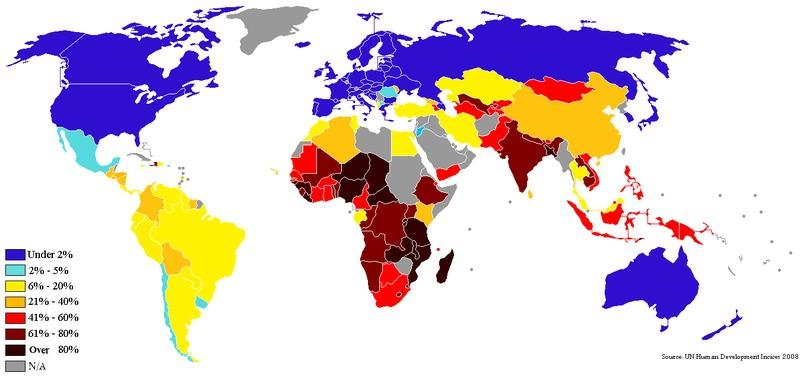
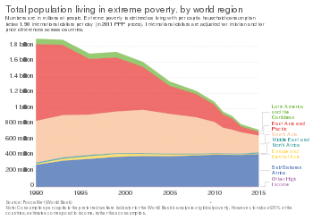
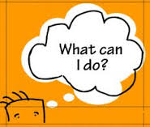

What is SDG-1?
Watch a short video about SDG-1
I hope you have got some idea about the SDG-1!!

End poverty in all its forms everywhere
Eradicating extreme poverty for all people everywhere by 2030 is a pivotal goal of the 2030 Agenda for Sustainable Development. Extreme poverty, defined as surviving on less than $2.15 per person per day at 2017 purchasing power parity, has witnessed remarkable declines over recent decades. However, the emergence of COVID-19 marked a turning point, reversing these gains as the number of individuals living in extreme poverty increased for the first time in a generation by almost 90 million over previous predictions. Even prior to the pandemic, the momentum of poverty reduction was slowing down. By the end of 2022, nowcasting suggested that 8.4 per cent of the world's population, or as many as 670 million people, could still be living in extreme poverty. This setback effectively erased approximately three years of progress in poverty alleviation. If current patterns persist, an estimated 7% of the global population around 575 million people could still find themselves trapped in extreme poverty by 2030, with a significant concentration in sub-Saharan Africa. A shocking revelation is the resurgence of hunger levels to those last observed in 2005. Equally concerning is the persistent increase in food prices across a larger number of countries compared to the period from 2015 to 2019. This dual challenge of poverty and food security poses a critical global concern.
Why there is so much poverty?
Poverty has many dimensions, but its causes include unemployment, social exclusion, and high vulnerability of certain populations to disasters, diseases and other phenomenon which prevent them from being productive.
Why should I care about other people's economic situation?
There are many reasons, but in short, because as human beings, our well- being is linked to each other.Growing inequality is detrimental to economic growth and undermines social cohesion, increas- ing political and social tensions and, in some circumstances, driving instability and conflicts. Caring about others' economic well-being, as highlighted in SDG 1, matters because it fosters global stability, human dignity, social cohesion, economic growth, better health and education outcomes, and environmental sustainability.
 
What can I do about it?

Your active engagement in policymaking can make a difference in addressing poverty. It ensures that your rights are promoted and that your voice is heard, that inter-generational knowledge is shared, and that innovation and critical thinking are encouraged at all ages to support transformational change in people's lives and communities. Governments can help create an enabling environment to generate pro- productive employment and job opportunities for the poor and the marginalized. The private sector has a major role to play in determining whether the growth it creates is inclusive and contributes to poverty reduction. It can promote economic opportunities for the poor. The contribution of science to end poverty has been significant. For example, it has enabled access to safe drinking water, reduced deaths caused by water-borne diseases, and improved hygiene to reduce health risks related to unsafe drinking water and lack of sanitation.